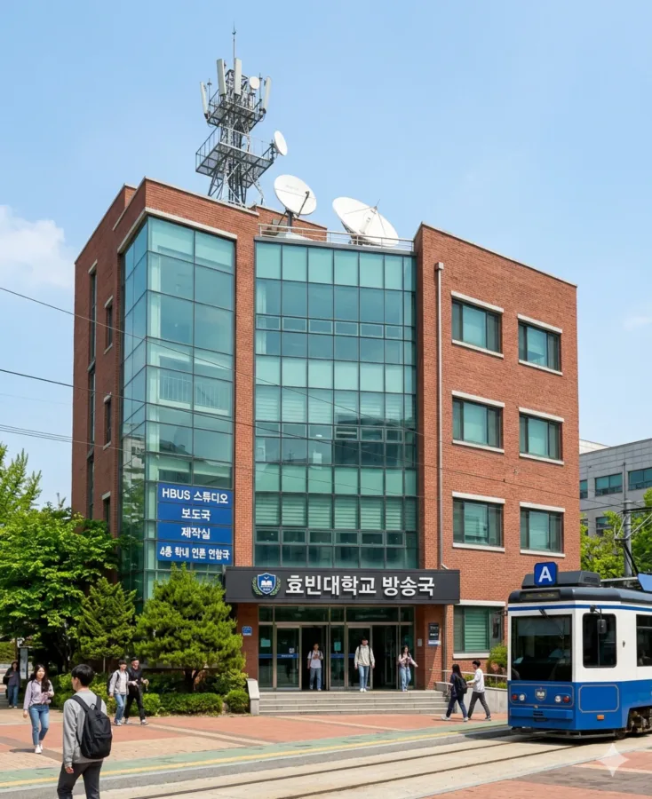
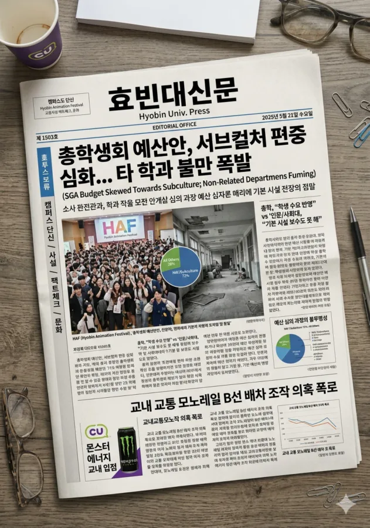
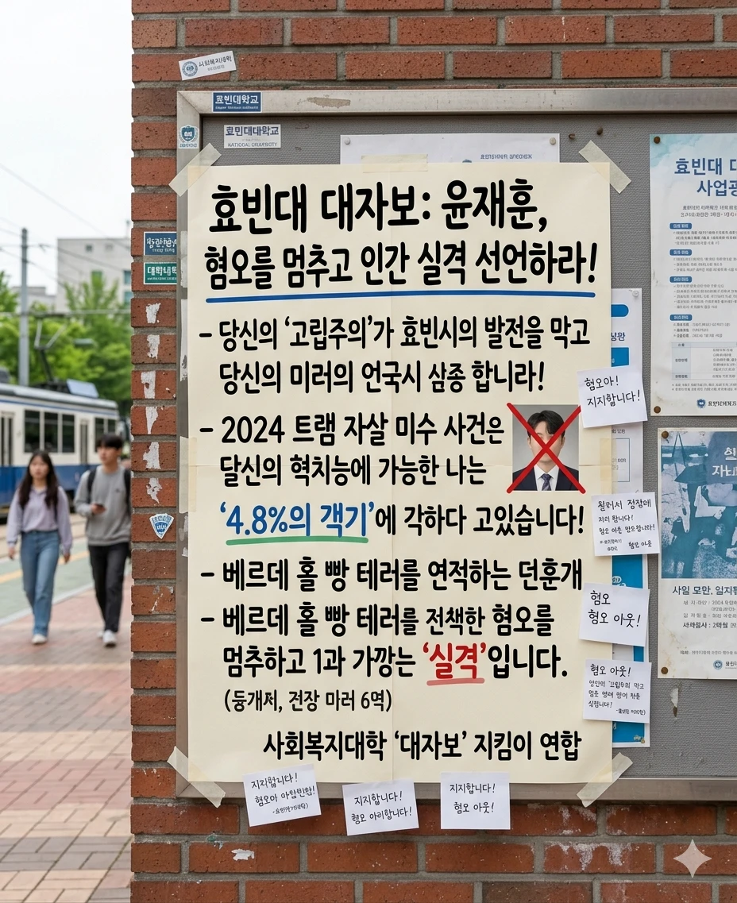

"캠퍼스의 눈과 귀, 그리고 총학생회의 가장 큰 골칫거리."
"점심시간마다 스피커에서 애니메이션 노래가 울려 퍼지는 기적의 언론 생태계."
효빈대학교 내에서 학생들의 목소리를 대변하고, 대학 본부 및 총학생회를 견제하며, 캠퍼스 문화를 주도하는 학내 언론 기구들을 정리한 문서.
공식적인 교내 언론 기구로는 방송국(HBUS), 신문사(효빈대신문), 영자신문사(The Hyobin Herald), 교지편집위원회 등 소위 '언론 4사'가 존재하며, 이들은 모두 캠퍼스 서구에 위치한 학생복지회관(2동) 4층에 본부를 두고 있다. 서로 문 열어놓고 마감일마다 살려달라고 울부짖는 소리가 복도에 울려 퍼진다.
거점국립대답게 언론의 자유도와 비판 수위가 상당히 높은 편이며, 특히 박효빈 시장의 서브컬처 친화적 시정 운영에 발맞춰, 다른 대학에서는 상상도 할 수 없는 '덕업일치' 성향의 기사나 방송 포맷이 매우 자연스럽게 수용되는 묘한 학풍을 지니고 있다.

Hyobin Broadcasting University System (HBUS). 캠퍼스 전역에 설치된 스피커를 통해 정오와 오후 5시에 라디오 방송을 송출하며, 효빈 애니메이션 페스티벌(HAF)이나 대동제 등 굵직한 행사의 영상 송출 및 라이브 중계를 총괄하는 교내 최대의 언론 기구다.
2025년 2학기, HBUS 오픈 채팅방의 사연 신청 게시판에서 이른바 '러브 라이브 vs 아이돌마스터 vs 뱅드림' 팬덤 간의 신청 곡 내전이 벌어진 적이 있다. 각 팬덤이 자기 장르의 곡을 점심시간 스피커로 틀기 위해 엄청난 양의 퀄리티 높은 사연(주로 거짓으로 꾸며낸 절절한 짝사랑 이야기나 취업 실패 극복기 등)을 써서 보냈다.
당시 방송국장(미디어커뮤니케이션학과 3학년)은 이를 역이용하여 아예 금요일 특별 코너로 'HBUS 캠퍼스 아이돌 대전'을 편성, 매주 한 장르씩 특집 방송을 해버리는 기염을 토했다. 이 방송을 듣고 박효빈 시장이 "대학 언론이 학생들의 다양한 문화적 수요를 훌륭하게 소화하고 있다"며 방송국 장비 교체 예산을 슬쩍 얹어줬다는 전설이 전해진다. (...)

격주 수요일마다 발행되는 교내 공식 신문. 학생회관, 도서관, 각 단과대 로비에 비치된 빨간색 가판대에서 무료로 배포된다.
2024년, 교내 교통을 책임지는 교통대학 소속 학생들이 모노레일 B선의 배차 간격 조작 의혹을 익명으로 제보한 적이 있다. 효빈대신문 취재팀이 한 달간 2호선 당선역 환승 센터에 잠복하며 데이터를 수집, 결국 교내 교통관제센터(TCC)의 예산 삭감으로 인한 꼼수 운행이었음을 1면 톱기사로 폭로했다.
이 보도로 인해 당시 대학 본부가 발칵 뒤집혔으나, 시청 교통국 소속 공무원들이 해당 기사의 퀄리티에 감탄하며 스카우트 제의를 했다는 웃픈 후일담이 있다. 또한, 윤재훈 사건 당시 그가 난동을 부린 이유와 심리적 배경을 가장 심층적으로 다룬 언론도 효빈대신문이었다.
효빈대학교의 글로벌화(국제화) 정책에 발맞춰 전면 영문으로 발행되는 학내 신문. 언어문학대학 학생들과 유학생들이 주축이 되어 운영된다.
학기당 1회(보통 기말고사 직전) 발행되는 묵직한 책자 형태의 교지. 신문이 시의성 있는 스트레이트 기사를 다룬다면, 교지는 깊이 있는 호흡의 기획/탐사 보도와 에세이, 소설 등을 담아낸다.

공식 언론 기구 외에도 학과별, 동아리별로 운영되는 독립적인 언론 매체나 여론 형성 채널이 존재한다.
| 기구명 | 매체 형태 | 발행/송출 주기 | 주요 성향 및 효빈위키 서술 |
|---|---|---|---|
| 효빈대학교 방송국 (HBUS) |
오디오/영상 라이브 중계 |
매일 정오 (오디오) 매주 금요일 (뉴스) |
캠퍼스의 눈과 귀. 애니송과 J-POP 지분이 비정상적으로 높다. HAF 라이브 방송을 도맡아 하는 효빈대 서브컬처 정책의 1선발 수혜자. |
| 효빈대신문 | 지면 신문 (타블로이드) |
격주 수요일 | 총학/본부 저격수. 마감일엔 몬스터 에너지가 동난다. 팩트 체킹에 목숨을 건 랩실/도서관 좀비들의 집합소. |
| 영자신문사 (The Hyobin Herald) |
영문 지면 및 웹진 |
월 1회 | 외국인 유학생들의 빛과 소금. 특히 필리핀 유학생 대상 정보가 충실하다. 입사하긴 힘들지만 취업 스펙으론 깡패다. |
| 교지편집위원회 '효빈' |
단행본 (교지) | 학기당 1회 | 디자인 예쁘기로 소문난 수집템. 서브컬처나 사회 현상에 대한 논문급 심층 분석 에세이가 주를 이룬다. |